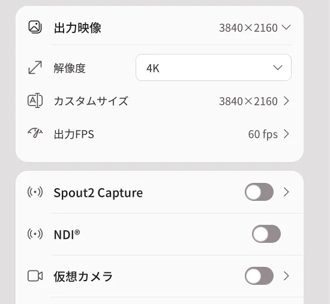
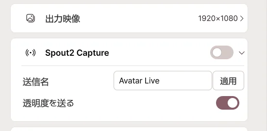
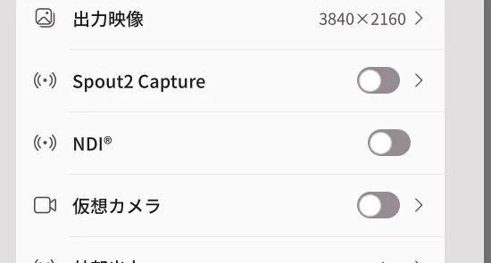
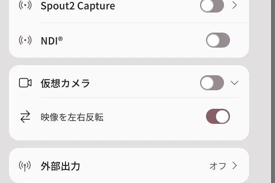
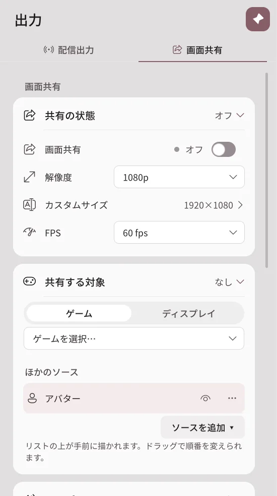
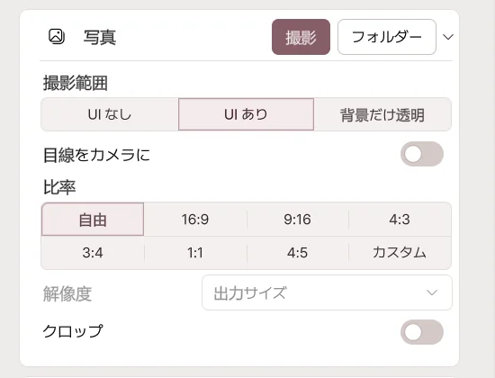

出力
完成したアバター画面をOBS・Discord・Zoomに送るか、写真・動画として保存します。
どの方法を使えばいいですか？
| 欲しいもの | 使用する機能 |
|---|---|
| このPCのOBSに透明アバターを入れる | Spout2 |
| 他のPCに映像を送る | NDI® |
| ビデオ通話のカメラで表示 | 仮想カメラ |
| ゲームとアバターを一緒に共有する | 画面共有 |
| 友達のアバターと一緒に配信する | リモート合流（配信 → 接続） |
| 写真・動画ファイル作成 | 写真と録画（スタジオ → 写真と録画） |
NDI®はVizrt NDI ABの登録商標です。 NDI公式案内
出力画像

| 項目 | 変えると |
|---|---|
| 解像度 | 上げるとより鮮明になりますが、PCへの負担が大きくなります。 |
| FPS | 上げると動きがより滑らかになり、PCやネットワークの負担が大きくなります。 |
| 画面比率 | 横・縦など送出画面の形を変えます。 |
| 配信対象 | 作業用シーンビューまたは選択したスタジオカメラの映像を送信します。 |
Basicは最大1080pとウォーターマーク、Proは最大4Kでウォーターマークなしの出力をサポートします。
Spout2
同じWindows PCでAvatar Liveの映像をOBSに送ります。

- OBSを終了して、OBS Spout2プラグインをインストールします。
- OBSを再実行します。
- Avatar Liveの出力 → 配信 → Spout2をオンにします。
- OBSのソース → + → Spout2 CaptureでAvatar Liveを選択します。
- 透明な背景を使うには、スタジオ → 背景 → 透明を選び、OBSでComposite with alphaをオンにします。
| 項目 | すること |
|---|---|
| Spout2 スイッチ | 映像を送信したり停止したりします。 |
| 送信名 | OBSソースリストに表示される名前です。 |
| 適用 | 変更した送信名を確定します。OBSでも新しい名前を再度選択してください。 |
| アルファ送信 | 背景の透明度も一緒に送信します。 |
Spout2とOBS受信プラグインの利用条件はSpout2告知に従います。
NDI
ネットワークで他のPCのOBSなどに映像を送ります。BasicとProの両方をサポートします。

- 受信PCのOBSを終了します。
- DistroAVと、そのバージョンで必要なNDIランタイムをインストールします。
- Avatar Liveで出力 → 配信 → NDIをオンにします。
- 受信側のOBSのソース → + → NDI SourceでAvatar Liveを選択します。
OBSなしで確認するには、NDI ToolsのStudio Monitorを使用できます。送信PCと受信PCは互いに通信できるネットワークである必要があります。
NDI Runtime・NDI Tools・DistroAVの利用条件は、それぞれNDI通知でご確認ください。
仮想カメラ
Discord・Zoomなどのカメラ一覧からアバターを選ぶ方式です。

- 仮想カメラをインストールしてデバイスを登録します。Windowsの管理者の承認が必要です。
- 仮想カメラスイッチをオンにします。
- 使用するアプリのカメラ一覧から Avatar Live Camera を選びます。
最大1920×1080、30fpsで、透過背景は送信されません。新しいデバイスがリストにない場合は、受信アプリを再起動してください。
画面共有
ゲームやプログラムの上にアバターを重ねて、Discordなどに送ります。

- 出力 → 画面共有を開きます。
- ゲームまたはディスプレイを選んで、共有する相手を選びます。
- アバターの位置と大きさを合わせた後、画面共有をオンにします。
- Discordの画面共有 → アプリケーションでAvatar Live Share Outputを選択します。
| 調整 | 変わるもの |
|---|---|
| アバターの位置・サイズ | ゲーム上に置かれるアバターの位置とサイズを変えます。 |
| オーディオ対象 | ゲーム・デスクトップ・選択したアプリの中から共有する音を選びます。 |
| アプリ音量 | 共有される側の音量を変更します。0%はミュート、100%は元の音量です。 |
| 追加ソース (Pro) | 他のウィンドウやモニターをさらに重ねます。リストの上にあるソースが前面に表示されます。 |
共有音が出ないとき
仮想オーディオデバイスがないという案内が表示された場合、仮想オーディオドライバのインストールを使うことができます。このボタンは VB-Audio の VB-CABLE をインストールするための経路です。インストール後、Windows の既定の再生デバイスが普段使っているヘッドホンまたはスピーカーか確認してください。
VB-CABLE は別の製作者の Donationware です。使用条件や寄付・ライセンスに関する案内は VB-CABLE 通知 で確認してください。
写真と録画
スタジオ → 写真と録画タブに、撮影画面・写真・録画が順に並んでいます。

- 撮影画面: 携帯電話やビデオカメラのように見える画面装飾と、比率・スタイルを選びます。
- 写真: 現在の出力画面を PNG として保存します。
- クロップ: 写真に含める領域を切り取ります。
- 比率: 横・縦・正方形など写真の形を選びます。
- 解像度: 保存ファイルのピクセル数を決めます。
- 録画 (Pro): 映像を MP4 として保存します。開始後、停止を押してファイルを完了させます。
- マイクの音: オンにすると、自分のマイクと、画面共有中なら共有したゲームの音が1つのトラックに混ざって入ります。オフにするとゲームの音だけが入り、共有していなければ音なしで録画されます。